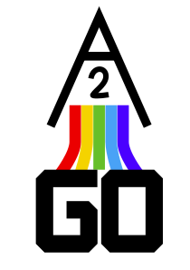

We're FTC team Ann Arbor GO, or A2GO, located in Ann Arbor, Michigan. We are a first year community team and are just getting up and running!
Our team is learning to design and build a robot. We will bring our robot to at least two competitions in Michigan. In each competition we compete but also collaborate with other teams.
We score points by accomplishing autonomous and driver-controlled objectives (like putting blocks into scoring boxes, or having the robot climb scaffolding).
But it’s not only about competing with the robot! We also make reports to describe our robot and our team, and give presentations to panels of judges. We learn to run a small business, including managing a budget and fund-raising so that we can pay for competition registrations and new robot parts.
We also participate in outreach events like talking about robotics at WESO 2025!
